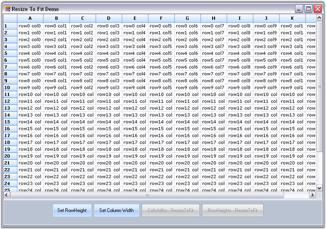

Essential Grid supports this feature to enable resizing of columns and rows based on the content of cells. The ResizeToFit method is used for this purpose.
The following code illustrates how to use this method in Grid control:
1. Using C#
|
[C#]
// Resize the column widths. this.gridControl1.ColWidths.ResizeToFit(GridRangeInfo.Cols(1, 5));
// Resize the row heights. this.gridControl1.RowHeights.ResizeToFit(GridRangeInfo.Rows(1, 5)); |
2. Using VB.NET
|
[VB.NET]
' Resize the column widths. Me.gridControl1.ColWidths.ResizeToFit(GridRangeInfo.Cols(1, 5))
' Resize the row heights. Me.gridControl1.RowHeights.ResizeToFit(GridRangeInfo.Rows(1, 5)) |
 Note: The parameter passed to the ResizeToFit
method is either GridRangeInfo.Cols or GridInfo.Rows method, which in turn has
two parameters:
Note: The parameter passed to the ResizeToFit
method is either GridRangeInfo.Cols or GridInfo.Rows method, which in turn has
two parameters:
1. The first parameter corresponds to the starting row/column that is to be resized to fit.
2. The second parameter corresponds to the ending row/column upto which the resize has to be done.
The following image shows the application of resize to fit operation to the first five rows of the grid.

Figure 177: Resize to Fit
Note: The preceding image is the output of a demo
that is available in the samples in the following installed location.
<Install Location>\Syncfusion\EssentialStudio\[Version Number]\Windows\Grid.Windows\Samples\2.0\Grid Layout\Resize To Fit Demo
The two buttons Set RowHeight and Set Column Width seen in the image above are used to set irregular height and width to the specified rows and columns of the grid respectively. The ColWidths – Resize To Fit and RowHeights – Resize To Fit are enabled only when the rows or columns are set to irregular height and width by using the Set RowHeight and Set Column Width buttons respectively.